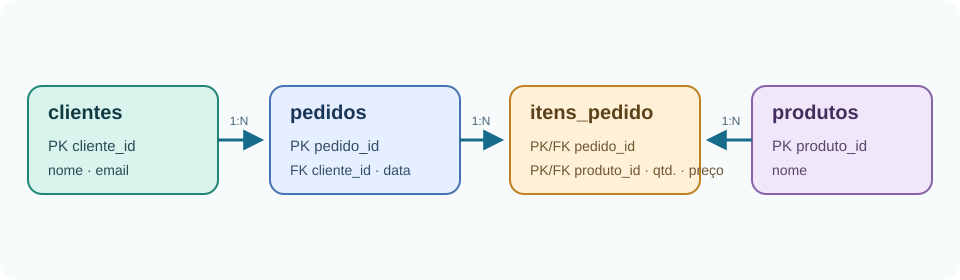

01 · O problema
Um dado mudou. Em quantas linhas precisamos corrigir?
Imagine uma loja que guarda o pedido inteiro em uma planilha. Uma linha pode ter o nome e o e-mail da cliente, a data da compra e uma lista de produtos separados por vírgula. Parece rápido no começo. Depois, a cliente troca de e-mail e o mesmo valor precisa ser corrigido em vários pedidos. Um produto aparece com dois nomes diferentes. E fica difícil responder: quantas unidades desse produto foram vendidas?
Vamos usar pedidos de uma loja fictícia para decompor essa planilha. Ao final, você saberá reconhecer as anomalias, acompanhar uma decomposição até a 3FN e consultar os dados com SQL. O objetivo não é dividir tudo em tabelas minúsculas: é registrar cada fato no lugar em que ele pode ser mantido sem contradição. A progressão parte de um problema concreto e só depois apresenta os termos, como recomenda a leitura introdutória consultada [4].
| Pedido | Data | Cliente | Produtos | Quantidades | |
|---|---|---|---|---|---|
| 501 | 2026-10-01 | Ana Lima | ana@example.test | Café, Filtro | 2, 1 |
| 502 | 2026-10-03 | Ana Lima | ana@example.test | Café | 1 |
02 · Vocabulário
Quatro termos antes de mexer nas tabelas
- Chave candidata
- Coluna ou conjunto mínimo de colunas capaz de identificar cada linha. A chave primária é a candidata escolhida para identificar os registros da tabela.
- Chave estrangeira
- Coluna ou conjunto de colunas que referencia uma chave única em outra tabela. O banco pode usá-la para impedir referências a clientes ou produtos inexistentes.
- Dependência funcional
- Escrevemos
X → Yquando, pelas regras do negócio, cada valor de X determina um único valor de Y. Por exemplo, se o código do cliente identifica o cliente, entãocliente_id → nome, email. - Atributo atômico
- Um valor tratado como uma unidade no domínio escolhido. Para este exemplo, guardamos um produto por linha de item, em vez de uma lista de produtos dentro de uma célula.
Caixa de aprofundamento: chaves e formas normais
As definições formais consideram todas as chaves candidatas, não apenas a chave primária escolhida [1, 2]. Para ensinar a intuição aqui, vamos acompanhar a chave composta (pedido_id, produto_id) na tabela de linhas do pedido. A 2FN exige que atributos não-chave dependam da chave inteira; a 3FN, além da 2FN, exige que para cada dependência funcional não trivial X → A, X seja superchave ou A seja atributo primo (membro de alguma chave candidata). No nosso caso, a regra prática de remover dependências transitivas explica a decomposição.
03 · Normalização passo a passo
Uma decomposição guiada pelas dependências
Primeira Forma Normal: uma ocorrência por célula
Para esta modelagem relacional, cada célula guarda um valor do domínio da coluna. Em vez de escrever “Café, Filtro” em uma célula, fazemos uma linha para cada produto do pedido. A chave candidata da tabela resultante é (pedido_id, produto_id), assumindo que cada produto aparece no máximo uma vez por pedido.
| Pedido | Data | Cliente ID | Nome | Produto ID | Produto | Qtd. | Preço vendido | |
|---|---|---|---|---|---|---|---|---|
| 501 | 2026-10-01 | 41 | Ana Lima | ana@example.test | 7 | Café | 2 | 18,90 |
| 501 | 2026-10-01 | 41 | Ana Lima | ana@example.test | 9 | Filtro | 1 | 12,00 |
| 502 | 2026-10-03 | 41 | Ana Lima | ana@example.test | 7 | Café | 1 | 18,90 |
Segunda Forma Normal: tirar dependências de parte da chave
Na tabela acima, pedido_id → data_pedido, cliente_id, cliente_nome, cliente_email: esses dados dependem só de parte da chave composta. Também temos produto_id → produto_nome. Já quantidade e preço efetivamente vendido dependem da combinação do pedido com o produto. Vamos separar pedidos, produtos e itens.
O preço efetivamente vendido fica no item: ele registra o acordo daquele pedido, mesmo que o preço atual do catálogo mude depois. Isso não é a mesma coisa que duplicar o preço atual do produto.
Terceira Forma Normal: tirar a dependência transitiva
A tabela pedidos_2fn tem chave simples pedido_id, então não há dependência parcial ali. Mas pedido_id → cliente_id e cliente_id → nome, email. O nome e o e-mail são fatos do cliente, não do pedido. Se ficarem nos pedidos, uma troca de e-mail ainda exige atualizar várias linhas. Criamos clientes e guardamos em pedidos apenas a referência ao cliente.

A decomposição funciona para as regras deste exemplo. Se a loja permitir várias linhas do mesmo produto dentro do mesmo pedido, use também um número de linha ou uma chave própria para cada item.
04 · SQL que você pode executar
As quatro tabelas finais em PostgreSQL 18
O script completo cria um esquema de demonstração, insere dados fictícios e executa uma consulta de relatório. Ele pode ser rodado em uma base local limpa; os objetos ficam sob o esquema artigo_normalizacao. O código fonte está em sql/normalizacao_pedidos.sql.
-- PostgreSQL 18: entidades separadas e associação com chave composta.
CREATE SCHEMA IF NOT EXISTS artigo_normalizacao;
SET search_path TO artigo_normalizacao;
CREATE TABLE IF NOT EXISTS clientes (
cliente_id integer PRIMARY KEY,
nome text NOT NULL,
email text NOT NULL UNIQUE
);
CREATE TABLE IF NOT EXISTS pedidos (
pedido_id integer PRIMARY KEY,
data_pedido date NOT NULL,
cliente_id integer NOT NULL REFERENCES clientes(cliente_id)
);
CREATE TABLE IF NOT EXISTS produtos (
produto_id integer PRIMARY KEY,
nome text NOT NULL UNIQUE
);
CREATE TABLE IF NOT EXISTS itens_pedido (
pedido_id integer NOT NULL REFERENCES pedidos(pedido_id),
produto_id integer NOT NULL REFERENCES produtos(produto_id),
quantidade integer NOT NULL CHECK (quantidade > 0),
preco_unitario_vendido numeric(10,2) NOT NULL CHECK (preco_unitario_vendido >= 0),
PRIMARY KEY (pedido_id, produto_id)
);Com as tabelas criadas, inserimos dados fictícios que respeitam as chaves estrangeiras:
-- PostgreSQL 18: dados de demonstração, sem dados pessoais reais.
INSERT INTO artigo_normalizacao.clientes (cliente_id, nome, email)
VALUES (41, 'Ana Lima', 'ana@example.test');
INSERT INTO artigo_normalizacao.pedidos (pedido_id, data_pedido, cliente_id)
VALUES (501, DATE '2026-10-01', 41);
INSERT INTO artigo_normalizacao.produtos (produto_id, nome)
VALUES (7, 'Café'), (9, 'Filtro');
INSERT INTO artigo_normalizacao.itens_pedido
(pedido_id, produto_id, quantidade, preco_unitario_vendido)
VALUES (501, 7, 2, 18.90), (501, 9, 1, 12.00);A chave primária composta de itens_pedido evita repetir o mesmo produto no mesmo pedido. As chaves estrangeiras mantêm as relações válidas; CHECK impede quantidade zero ou preço negativo. As constraints são verificadas pelo PostgreSQL quando os dados são inseridos ou atualizados [3].
SELECT p.pedido_id,
c.nome AS cliente,
pr.nome AS produto,
i.quantidade,
i.preco_unitario_vendido,
i.quantidade * i.preco_unitario_vendido AS subtotal
FROM artigo_normalizacao.pedidos p
JOIN artigo_normalizacao.clientes c USING (cliente_id)
JOIN artigo_normalizacao.itens_pedido i USING (pedido_id)
JOIN artigo_normalizacao.produtos pr USING (produto_id)
ORDER BY p.pedido_id, pr.nome;A consulta recompõe uma visão útil com JOIN. Normalização não elimina consultas com junções; ela coloca cada fato em uma única fonte de verdade para facilitar sua manutenção.
05 · Erros comuns
O que costuma dar errado na primeira tentativa
- Confundir 1FN com “um campo não pode ter espaços”. O critério é o valor do domínio e a regra de negócio, não a pontuação do texto.
- Esquecer a chave composta. Sem identificar a chave candidata, não dá para explicar com precisão o que depende de parte dela.
- Apagar um fato histórico útil. O preço que foi cobrado no pedido é diferente do preço atual do produto.
- Achar que normalização garante todas as regras do negócio. Unicidade, obrigatoriedade, limites e relacionamentos também precisam de constraints explícitas.
- Tratar todo dado repetido como erro. Uma cópia histórica pode representar um fato diferente e deliberado.
06 · Limites e próximos passos
Normalize para preservar significado, não por uma regra automática
Este exemplo mostra dependências simples e uma decomposição direta. Na prática, as dependências precisam refletir regras reais. Se e-mail não for único, não devemos impor UNIQUE. Se o cliente puder ter vários endereços, a relação precisa ser modelada separadamente. E sistemas de relatório podem usar visões materializadas ou tabelas derivadas para reduzir custo de leitura — desde que o grupo meça o problema, defina como atualizar o resultado e preserve uma fonte confiável dos fatos.
Para começar na área, pegue uma planilha pequena, marque a chave candidata, escreva as dependências funcionais e pergunte quais anomalias aparecem ao inserir, alterar e excluir linhas. Depois, desenhe a decomposição, crie as constraints e compare as consultas antes e depois.
07 · Referências e leituras
Para aprofundar
- E. F. Codd, “A Relational Model of Data for Large Shared Data Banks” (1970) — texto original que introduz o modelo relacional e discute redundância e consistência.
- E. F. Codd, “Further Normalization of the Data Base Relational Model” (IBM Research Report RJ909, 1971) — referência histórica para 2FN e 3FN.
- Documentação oficial do PostgreSQL 18: Constraints — sintaxe e comportamento de chaves, referências e checks usados no script.
- Alura, “Normalização: o que é, para que serve e como usá-la” — leitura introdutória em português para acompanhar uma primeira explicação de anomalias e formas normais.
As referências [1] e [2] sustentam o contexto histórico e teórico; [3] documenta o SQL do exemplo. A página da Alura foi analisada como referência didática, não como fonte primária das definições formais.
Autoria
Quem escreveu
Os cartões apresentam os integrantes do grupo. As fotos e informações foram incluídas com autorização de seus autores.